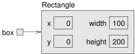
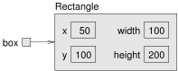
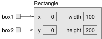
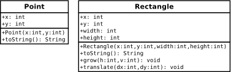
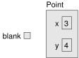

Notices
This is the free HTML version of
We are working on making this site accessible in compliance with Web Content Accessibility Guidelines. If you have suggestions for improvements, please file an issue.
Are you using one of our books in a class? We'd like to know about it. Please consider filling out this short survey.
10 Mutable Objects
As you learned in the previous chapter, an object is a collection of data that provides a set of methods. For example, a String is a collection of characters that provides methods like charAt and substring.
This chapter explores two new types of objects: Point and Rectangle. You’ll see how to write methods that take objects as parameters and produce objects as return values. You will also look at the source code for the Java library.
10.1 Point Objects
In math, 2D points are often written in parentheses with a comma separating the coordinates. For example, \((0,0)\) indicates the origin, and \((x,y)\) indicates the point \(x\) units to the right and \(y\) units up from the origin.
The java.awt package provides a class named Point that represents a location in a Cartesian plane. In order to use the Point class, you have to import it:
import java.awt.Point;Then, to create a new point, you use the new operator:
Point blank;
blank = new Point(3, 4);The first line declares that blank has type Point. The second line creates the new Point with the coordinates \(x=3\) and \(y=4\). The result of the new operator is a reference to the object. Figure 10.1 shows the result.
Point object.
As usual, the name of the variable blank appears outside the box, and its value appears inside the box. In this case, the value is a reference, which is represented with an arrow. The arrow points to the Point object, which contains two variables, x and y.
Variables that belong to an object are called attributes. In some documentation, you also see them called “fields”. To access an attribute of an object, Java uses dot notation. For example:
int x = blank.x;The expression blank.x means “go to the object blank refers to, and get the value of the attribute x.” In this case, we assign that value to a local variable named x.
There is no conflict between the local variable x and the attribute x. The purpose of dot notation is to identify which variable you are referring to unambiguously.
You can use dot notation as part of an expression. For example:
System.out.println(blank.x + ", " + blank.y);
int sum = blank.x * blank.x + blank.y * blank.y;The first line displays 3, 4. The second line calculates the value 25.
10.2 Objects as Parameters
You can pass objects as parameters in the usual way. For example:
public static void printPoint(Point p) {
System.out.println("(" + p.x + ", " + p.y + ")");
}This method takes a point as an argument and displays its attributes in parentheses. If you invoke printPoint(blank), it displays (3, 4).
As another example, we can rewrite the distance method from Section 4.9 so that it takes two Points as parameters instead of four doubles:
public static double distance(Point p1, Point p2) {
int dx = p2.x - p1.x;
int dy = p2.y - p1.y;
return Math.sqrt(dx * dx + dy * dy);
}Passing objects as parameters makes the source code more readable and less error-prone because related values are bundled together.
You actually don’t need to write a distance method, because Point objects already have one. To compute the distance between two points, we invoke distance on one and pass the other as an argument:
Point p1 = new Point(0, 0);
Point p2 = new Point(3, 4);
double dist = p1.distance(p2); // dist is 5.0It turns out you don’t need the printPoint method either. If you invoke System.out.println(blank), it prints the type of the object and the values of the attributes:
java.awt.Point[x=3,y=4]Point objects provide a method called toString that returns a string representation of a point. When you call println with objects, it automatically calls toString and displays the result.
10.3 Objects as Return Values
The java.awt package also provides a class named Rectangle. To use it, you have to import it:
import java.awt.Rectangle;Rectangle objects are similar to points, but they have four attributes: x, y, width, and height. The following example creates a Rectangle object and makes the variable box refer to it:
Rectangle box = new Rectangle(0, 0, 100, 200);Figure 10.2 shows the effect of this assignment.

Rectangle object.
If you run System.out.println(box), you get this:
java.awt.Rectangle[x=0,y=0,width=100,height=200]Again, println uses the toString method provided by Rectangle, which knows how to represent Rectangle objects as strings.
You can also write methods that return new objects. For example, findCenter takes a Rectangle as an argument and returns a Point with the coordinates of the center of the rectangle:
public static Point findCenter(Rectangle box) {
int x = box.x + box.width / 2;
int y = box.y + box.height / 2;
return new Point(x, y);
}The return type of this method is Point. The last line creates a new Point object and returns a reference to it.
10.4 Rectangles Are Mutable
You can change the contents of an object by making an assignment to one of its attributes. For example, to “move” a rectangle without changing its size, you can modify the x and y values:
Rectangle box = new Rectangle(0, 0, 100, 200);
box.x = box.x + 50;
box.y = box.y + 100;The result is shown in Figure 10.3.

We can encapsulate this code in a method and generalize it to move the rectangle by any amount:
public static void moveRect(Rectangle box, int dx, int dy) {
box.x = box.x + dx;
box.y = box.y + dy;
}The variables dx and dy indicate how far to move the rectangle in each direction. Invoking this method has the effect of modifying the Rectangle that is passed as an argument:
Rectangle box = new Rectangle(0, 0, 100, 200);
moveRect(box, 50, 100); // now at (50, 100, 100, 200)Modifying objects by passing them as arguments to methods can be useful. But it can also make debugging difficult, because it is not always clear which method invocations modify their arguments.
Java provides a number of methods that operate on Points and Rectangles. For example, translate has the same effect as moveRect, but instead of passing the rectangle as an argument, you use dot notation:
box.translate(50, 100);This line invokes the translate method on the object that box refers to, which modifies the object.
This syntax—using dot notation to invoke a method on an object, rather than passing it as a parameter—is more consistent with the style of object-oriented programming.
10.5 Aliasing Revisited
Remember that when you assign an object to a variable, you are assigning a reference to an object. It is possible to have multiple variables that refer to the same object. For example, this code creates two variables that refer to the same Rectangle:
Rectangle box1 = new Rectangle(0, 0, 100, 200);
Rectangle box2 = box1;Figure 10.4 shows the result: box1 and box2 refer to the same object, so any changes that affect one variable also affect the other.

Rectangle object.
For example, the following code uses grow to make box1 bigger by 50 units in all directions. It decreases x and y by 50, and it increases height and width by 100:
box1.grow(50, 50); // grow box1 (alias)The result is shown in Figure 10.5.
grow.
Now, if we print box1, we are not surprised to see that it has changed:
java.awt.Rectangle[x=-50,y=-50,width=200,height=300]And if we print box2, we should not be surprised to see that it has changed too, because it refers to the same object:
java.awt.Rectangle[x=-50,y=-50,width=200,height=300]This scenario is called “aliasing” because a single object has multiple names, or aliases, that refer to it.
As you can tell from this simple example, code that involves aliasing can get confusing fast, and it can be difficult to debug.
10.6 Java Library Source
So far we have used several classes from the Java library, including System, String, Scanner, Math, and Random. These classes are written in Java, so you can read the source code to see how they work.
The Java library contains thousands of files, many of which are thousands of lines of code. That’s more than one person could read and understand fully, but don’t be intimidated!
Because it’s so large, the library source code is stored in a ZIP archive named src.zip. If you have Java installed on your computer, you should already have this file somewhere:
On Linux, it’s likely under:
/usr/lib/jvm/.../lib
If not, you might have to install the openjdk-...-source package.On macOS, it’s likely under:
/Library/Java/JavaVirtualMachines/.../Contents/Home/libOn Windows, it’s likely under:
C:\Program Files\Java\...\lib
When you open (or unzip) the file, you will see folders that correspond to Java packages. For example, open the java folder, and then open the awt folder. (If you don’t see a java folder at first, open the java.desktop folder.) You should now see Point.java and Rectangle.java, along with the other classes in the java.awt package.
Open Point.java in your editor and skim through the file. It uses language features we haven’t discussed yet, so you probably won’t understand every line. But you can get a sense of what professional Java source code looks like by browsing through the library.
Notice how much of Point.java is documentation (see Appendix 19). Each method includes comments and tags like @param and @return. Javadoc reads these comments and generates documentation in HTML. You can see the same documentation online by doing a web search for “Java Point”.
Now take a look at the grow and translate methods in the Rectangle class. There is more to them than you may have expected.
10.7 Class Diagrams
To summarize what you’ve learned so far, Point and Rectangle objects have attributes and methods. Attributes are an object’s data; methods are an object’s code. An object’s class definition specifies the attributes and methods that it has.
Unified Modeling Language (UML) defines a graphical way to summarize this information. Figure 10.6 shows two examples, the UML class diagrams for the Point and Rectangle classes.

Point and Rectangle.
Each class is represented by a box with the name of the class, a list of attributes, and a list of methods.
To identify the types of attributes and parameters, UML uses a language-independent syntax, like x: int rather than Java syntax, int x.
The plus sign (+) identifies public attributes and methods. A minus sign (-) identifies private attributes and methods, which we discuss in the next chapter.
Both Point and Rectangle have additional methods; we show only the ones introduced in this chapter.
In contrast to memory diagrams, which visualize objects (and variables) at run-time, a class diagram visualizes the source code at compile-time.
10.8 Scope Revisited
In Section 4.5, we introduced the idea that variables have scope. The scope of a variable is the part of a program where a variable can be used.
Consider the first few lines of the Rectangle.translate method from the Java library source code:
public void translate(int dx, int dy) {
int oldv = this.x;
int newv = oldv + dx;
if (dx < 0) {
...This example uses three kinds of variables:
Parameters (
dxanddy)Local variables (
oldvandnewv)Attributes (
this.x)
Parameters and local variables are created when a method is invoked, and they disappear when the method returns. They can be used anywhere inside the method, but not in other methods and not in other classes.
Attributes are created when an object is created, and they disappear when the object is destroyed. They can be used in any of the object’s methods, using the keyword this. And if they are public, they can be used in other classes via references to the object, box1.x.
When the Java compiler encounters a variable name, it searches backward for its declaration. The compiler first looks for local variables, then parameters, then attributes.
10.9 Garbage Collection
In the previous section, we said that attributes exist as long as the object exists. But when does an object cease to exist? Here is a simple example:
Point blank = new Point(3, 4);
blank = null;The first line creates a new Point object and makes blank refer to it. The second line changes blank so that instead of referring to the object, it refers to nothing. As shown in Figure 10.7, after the second assignment, there are no references to the Point object.

null.
If there are no references to an object, there is no way to access its attributes or invoke a method on it. From the program’s point of view, it ceases to exist. However, it’s still present in the computer’s memory, taking up space.
As your program runs, the system automatically looks for stranded objects and deletes them; then the space can be reused for new objects. This process is called garbage collection.
You don’t have to do anything to make garbage collection happen, and in general, you don’t have to be aware of it. But in high-performance applications, you may notice a slight delay every now and then while Java reclaims space from discarded objects.
10.10 Mutable vs Immutable
Points and Rectangles are mutable objects, because their attributes can be modified. You can modify their attributes directly, like box.x = 15, or you can invoke methods that modify their attributes, like box.translate(15, 0).
In contrast, immutable objects like Strings and Integers cannot be modified. They don’t allow direct access to their attributes or provide methods that change them.
Immutable objects have advantages that help improve the reliability and performance of programs. You can pass strings (and other immutable objects) to methods without worrying about their contents changing as a side-effect of the method. That makes programs easier to debug and more reliable.
Also, two strings that contain the same characters can be stored in memory only once. That can reduce the amount of memory the program uses and can speed it up.
In the following example, s1 and s2 are created differently, but they refer to equivalent strings; that is, the two strings contain the same characters:
public class Surprise {
public static void main(String[] args) {
String s1 = "Hi, Mom!";
String s2 = "Hi, " + "Mom!";
if (s1 == s2) { // true!
System.out.println("s1 and s2 are the same");
}
}
}Because both strings are specified at compile time, the compiler can tell that they are equivalent. And because strings are immutable, there is no need to make two copies; the compiler can create one String and make both variables refer to it.
As a result, the test s1 == s2 turns out to be true, which means that s1 and s2 refer to the same object. In other words, they are not just equivalent; they are identical.
Although immutable objects have some advantages, mutable objects have other advantages. Sometimes it is more efficient to modify an existing object, rather than create a new one. And some computations can be expressed more naturally using mutation.
Neither design is always better, which is why you will see both.
10.11 StringBuilder Objects
Here’s an example in which mutable objects are efficient and arguably more natural: building a long string by concatenating lots of small pieces.
Strings are particularly inefficient for this operation. For example, consider the following program, which reads 10 lines from System.in and concatenates them into a single String:
String text = "";
for (int i = 0; i < 10; i++) {
String line = in.nextLine(); // new string
text = text + line + '\n'; // two more strings
}
System.out.print("You entered:\n" + text);Inside the for loop, in.nextLine() returns a new string each time it is invoked. The next line of code concatenates text and line, which creates another string, and then appends the newline character, which creates yet another string.
As a result, this loop creates 30 String objects! At the end, text refers to the most recent String. Garbage collection deletes the rest, but that’s a lot of garbage for a seemingly simple program.
The Java library provides the StringBuilder class for just this reason. It’s part of the java.lang package, so you don’t need to import it. Because StringBuilder objects are mutable, they can implement concatenation more efficiently.
Here’s a version of the program that uses StringBuilder:
StringBuilder text = new StringBuilder();
for (int i = 0; i < 10; i++) {
String line = in.nextLine();
text.append(line);
text.append('\n');
}
System.out.print("You entered:\n" + text);The append method takes a String as a parameter and appends it to the end of the StringBuilder. Each time it is invoked, it modifies the StringBuilder; it doesn’t create any new objects.
If needed, you can return the StringBuilder’s contents as a string by calling the toString method:
String result = text.toString();The StringBuilder class also provides methods for inserting and deleting parts of strings efficiently. Programs that manipulate large amounts of text run much faster if you use StringBuilder instead of String.
10.12 Vocabulary
- attribute:
-
One of the named data items that make up an object.
- dot notation:
-
Use of the dot operator (
.) to access an object’s attributes or methods. - UML:
-
Unified Modeling Language, a standard way to draw diagrams for software engineering.
- class diagram:
-
An illustration of the attributes and methods for a class.
- garbage collection:
-
The process of finding objects that have no references and reclaiming their storage space.
- mutable:
-
An object that can be modified at any time. Points and rectangles are mutable by design.
10.13 Exercises
The code for this chapter is in the ch10 directory of ThinkJavaCode2. See page for instructions on how to download the repository. Before you start the exercises, we recommend that you compile and run the examples.
At this point, you know enough to read Appendix 20, which is about simple 2D graphics and animations. During the next few chapters, you should take a detour to read this appendix and work through the exercises.
Exercise 10.1. The point of this exercise is to make sure you understand the mechanism for passing objects as parameters.
For the following program, draw a stack diagram showing the local variables and parameters of
mainandriddlejust beforeriddlereturns. Use arrows to show which objects each variable references.What is the output of the program?
Is the
blankobject mutable or immutable? How can you tell?
public static int riddle(int x, Point p) {
x = x + 7;
return x + p.x + p.y;
}public static void main(String[] args) {
int x = 5;
Point blank = new Point(1, 2);
System.out.println(riddle(x, blank));
System.out.println(x);
System.out.println(blank.x);
System.out.println(blank.y);
}Exercise 10.2. The point of this exercise is to make sure you understand the mechanism for returning new objects from methods. The following code uses findCenter and distance as defined in this chapter.
Draw a stack diagram showing the state of the program just before
findCenterreturns. Include all variables and parameters, and show the objects those variables refer to.Draw a stack diagram showing the state of the program just before
distancereturns. Show all variables, parameters, and objects.What is the output of this program? (Can you tell without running it?)
public static void main(String[] args) {
Point blank = new Point(5, 8);
Rectangle rect = new Rectangle(0, 2, 4, 4);
Point center = findCenter(rect);
double dist = distance(center, blank);
System.out.println(dist);
}Exercise 10.3. This exercise is about aliasing. Recall that aliases are two variables that refer to the same object. The following code uses findCenter and printPoint as defined in this chapter.
Draw a diagram that shows the state of the program just before the end of
main. Include all local variables and the objects they refer to.What is the output of the program?
At the end of
main, arep1andp2aliased? Why or why not?
public static void main(String[] args) {
Rectangle box1 = new Rectangle(2, 4, 7, 9);
Point p1 = findCenter(box1);
printPoint(p1);
box1.grow(1, 1);
Point p2 = findCenter(box1);
printPoint(p2);
}